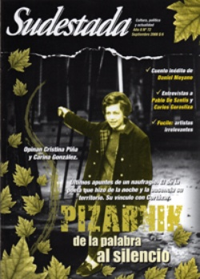

Buscar
Bajo el influjo de Farabundo Martí
Notas sobre el desborde político campesino y el levantamiento insurreccional de 1932 en El Salvador. El papel de la Internacional Comunista y el proyecto de Farabundo Martí enterrado a sangre y fuego.
Edición N° 72
Septiembre 2008
Revista bimensual
Comprar edición impresaSumario
- Alejandra Pizarnik: de la palabra al silencio
- Los que no rompen nada
- "Siempre creemos que la verdad está en el secreto"
- "En el teatro actual hay un desprecio por lo político"
- Bajo el influjo de Farabundo Martí
- Último tren a Escalada
Compartir Articulo
1.El 22 de enero de 1932, tuvo lugar en El Salvador un levantamiento insurreccional de considerable relevancia que marcó, de hecho, un parteaguas en la historia política salvadoreña.
2.En realidad, los hechos del 22 de enero, y que se prolongaron hasta marzo, pero ya en el formato de respuesta represiva del Estado (porque el levantamiento insurreccional apenas si duró tres días), constituyeron el final de un período al que puede fijársele su inicio en el año de 1927.
3.En el contexto latinoamericano, el levantamiento insurreccional salvadoreño no constituye un hecho inusual en términos de organización y movilización político-social. Desde 1927, por ejemplo, tenía lugar en Nicaragua todo un proceso de resistencia contra la intervención norteamericana (acaecida en 1926), y que fuera encabezada por el Ejército Defensor de la Soberanía Nacional de Nicaragua bajo el mando de A. C. Sandino. Aún los ecos de la revolución mexicana de 1910 se hallaban presentes en el ambiente político del continente. En Perú, al principio de la década de 1930, la intensa actividad organizativa había dado lugar a luchas campesinas extendidas; contemporáneas al levantamiento insurreccional de 1932 en El Salvador son las acciones de insubordinación popular en la ciudad de Trujillo (en Perú, a mediados de 1932). Y lo mismo podría decirse de los hechos que culminaron con la proclamación de la República Socialista de Chile en junio de 1932. Es más, ahora se sabe que en Chile, en 1934, también tuvo lugar una tentativa insurreccional de significativa importancia en Ranquil. A todo este marco general, habría que sumarle la creciente estructuración sindical (de variado signo, que va desde el anarquismo, pasa por el reformismo y culmina en el sindicalismo radical -que propiciaban entonces los diversos núcleos de militantes comunistas en los distintos países latinoamericanos-) y la conformación y formalización pública de los partidos comunistas, y también socialistas, en casi todo el continente americano.
4. Lo novedoso del hecho insurreccional que irrumpió en enero de 1932 es que se trató de un constructo político-militar desalineado. Es decir, aunque es indudable el peso específico de la red de militancia comunista (Partido Comunista de El Salvador -PCS-, Socorro Rojo Internacional -SRI- y Federación Regional de Trabajadores -FRT-) en el proceso político salvadoreño abierto a partir de 1927 y en el empeño insurreccional que se decantó el 22 de enero de 1932, esto no sugiere, de ningún modo, que la acción insurreccional, enarbolada por el núcleo de dirección ad hoc que se formó dentro del PCS, se hallaba en sintonía con las férreas directrices de la III Internacional (Comintern o Internacional Comunista). Y este no es un dato baladí si se considera que si bien es cierto que la labor sindical radical y la conformación de los par-tidos comunistas en el continente americano tuvo una génesis visible, interna, en cada país, debe decirse, a su vez, que de forma temprana se dio una estrecha ligazón entre los nacientes núcleo comunistas y la III Internacional.
5. No es ocioso reconocer que, para 1932, el proyecto político bolchevique en la Unión Soviética se ha convertido en una realidad geoestratégica y punto de apoyo (ideológico, claro, pero también práctico-político) para una parte significativa de los empeños de transformación social en los distintos continentes. No obstante, en la tercera década del siglo veinte, la III Internacional se encuentra más preocupada por el avatar de la situación alemana (y del papel que desempeña en ese momento el partido de los comunistas alemanes, que después del partido de los bolcheviques rusos es uno de los más prestigiosos y quizás el más importante del mundo). América Latina no es prioridad casi en ningún sentido; y América Central mucho menos. No digamos El Salvador. Además, debe agregarse que la III Internacional en aquel año, de forma oficial, ha abandonado su línea táctica de "clase contra clase" y se haya empeñada en la configuración de los frentes amplios. Y esto se relaciona con lo que hace la red de militancia comunista en El Salvador, en tanto que el levantamiento insurreccional, articulado por dicha red, choca con esta nueva perspectiva. Y esto explica, de algún modo, el silencio casi sepulcral que el hecho insurreccional tuvo en el seno de la III Internacional...
(La nota completa en la edición gráfica de Sudestada Nº72 - Septiembre 2008)
Comentarios
Jaime Barba, desde El Salvador
Articulos más vistos


LIBRERÍA SUDESTADA

Colección infantil

Distribuidora de Libros

Suscripción

Sudestada en URUGUAY

Otros articulos de esta edición
Alejandra Pizarnik: de la palabra al silencio
"No quiero ir más que hasta el fondo". Ese fue el último verso que Alejandra Pizarnik dejó en el pizarrón ...
"En el teatro actual hay un desprecio por lo político"
Figura emblemática del teatro argentino, Carlos Gorostiza da cuenta de su historia al compás de los principales acontecimientos sociales y ...
Último tren a Escalada
Ferroviario desde la cuna, abrazador interminable de Remedios de Escalada Este, un barrio detrás de un paredón que divide las ...
"Siempre creemos que la verdad está en el secreto"
París, 1889. Los doce detectives más famosos del globo se reúnen para debatir sus casos resonantes. Pero un crimen desata ...
 Editorial
Editorial